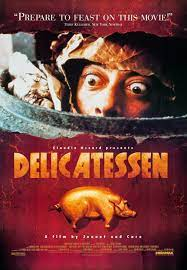

My all time favorite Anime film from Studio Ghibli
For more info, check out: www.imdb.com/Mononoke
Incredible movie about the tough life of the inhabitants of Rios Favelas in the 1960-80s
For more info, check out: www.imdb.com/City_of_God
My all time favorite Anime film from Studio Ghibli
For more info, check out: www.imdb.com/Mononoke

A surrealistic dream coming true. The trailer will totally absorb you already into it
For more info, check out: www.imdb.com/Delicatessen

My favorite Tarantino film. I love Christoph Waltz in the role of the Nazi supervillain and Brad Pitt in the role of the Nazi scalp-hunting guerrilla commander
For more info, check out: www.imdb.com/Inglourious_Basterds

Mind-dazzling and breathtaking action film with Leonardo di Caprio
For more info, check out: www.imdb.com/Inception